Range (2025)
A variety of work responding to different prompts and media explorations.
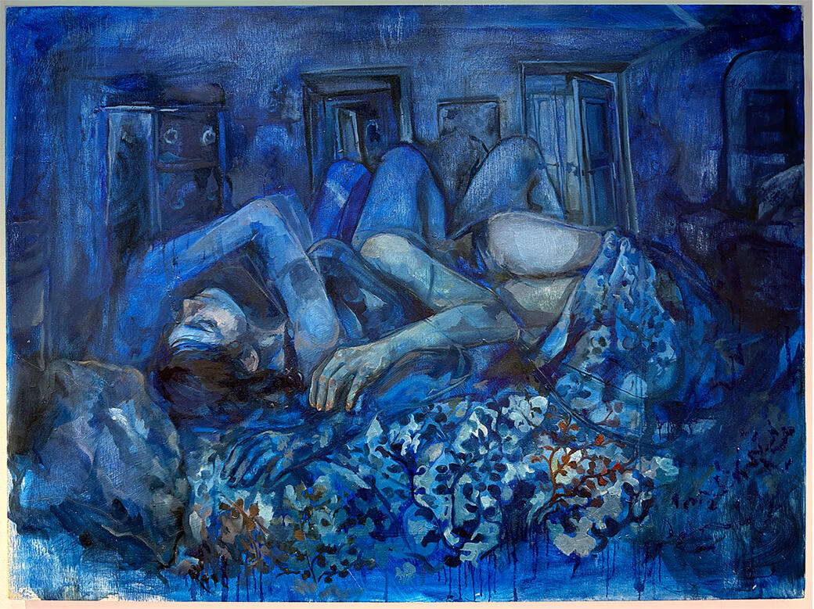
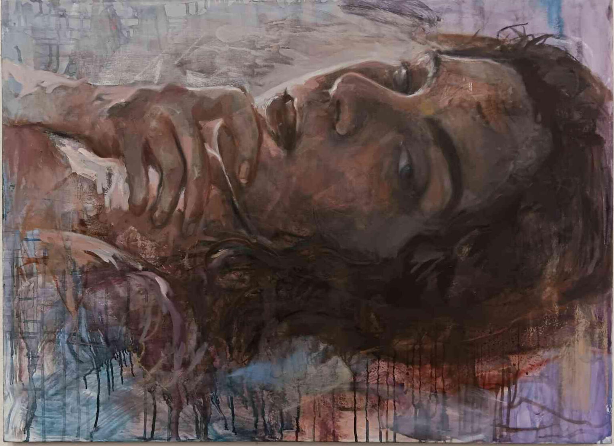
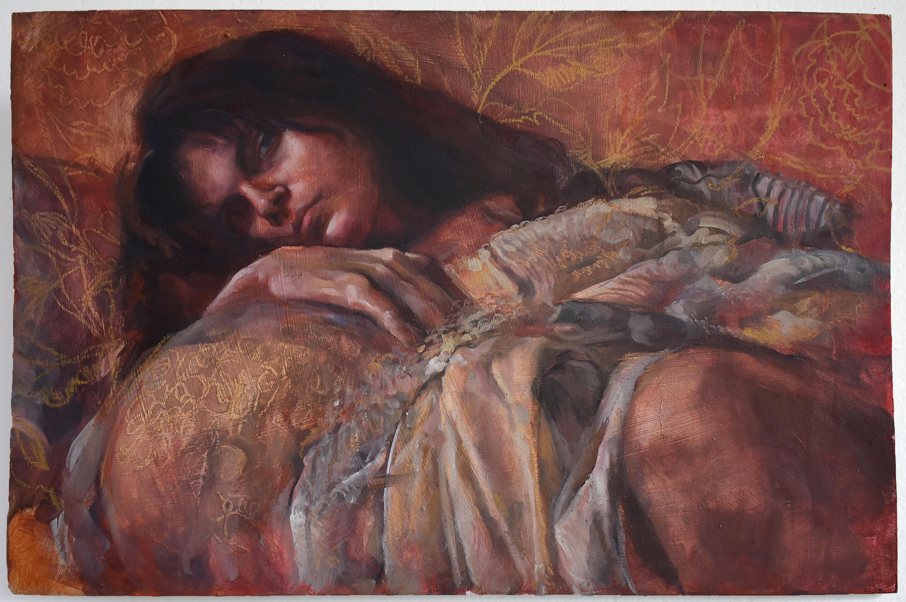
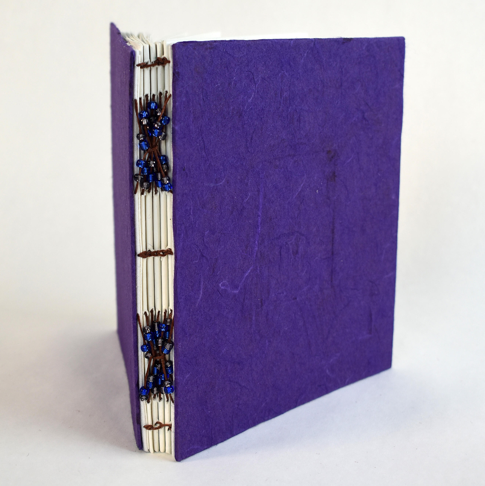
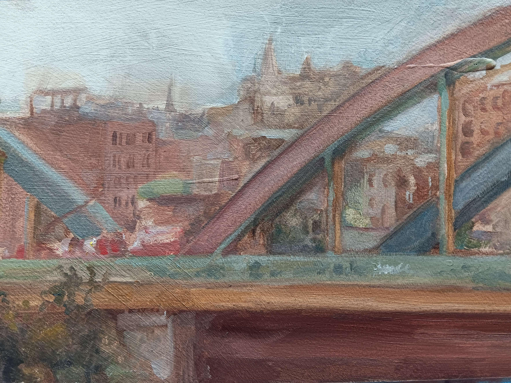
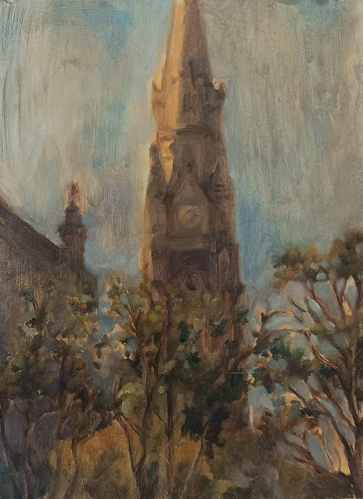
Dissolution (2024)
"The passage of time is a destructive act" forms the basis of an exploration into how actions lost in routine are rediscovered and immortalized through the act of self portraiture. I paint moments from daily routine in sequence, then dissolve, destroy, or cover layers of paint to emulate the wear of time, indelible markings form the body as ghost images along a timeline. The remnants explore the relationship between transparent forms and opaque lines as symbols of time, importance, and repetition.
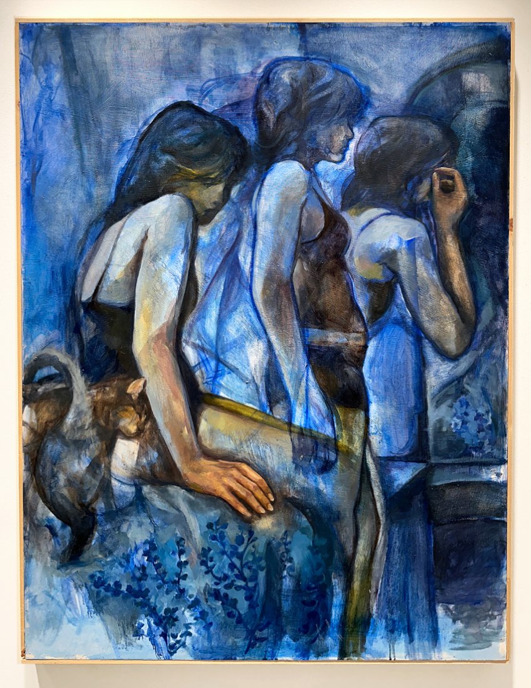
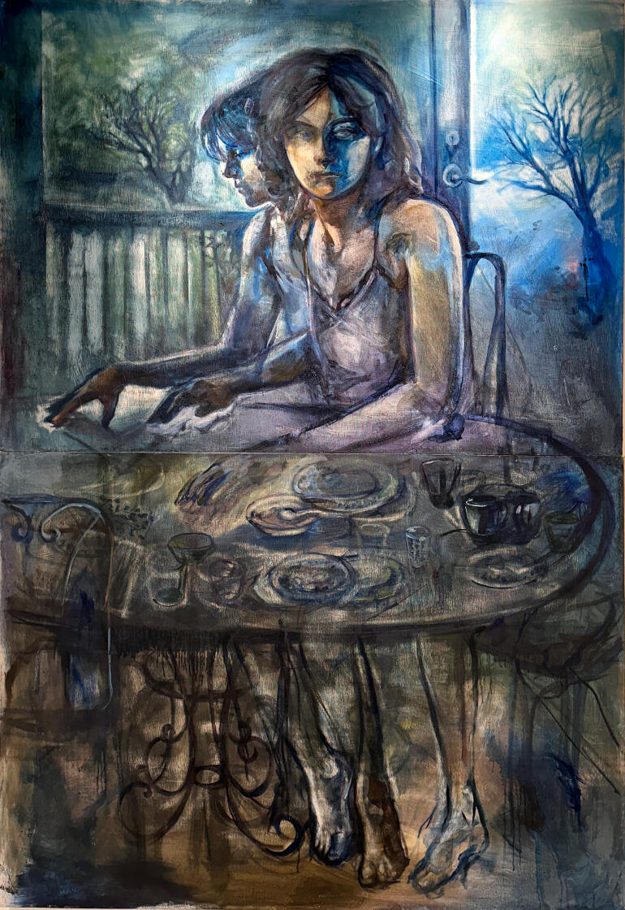
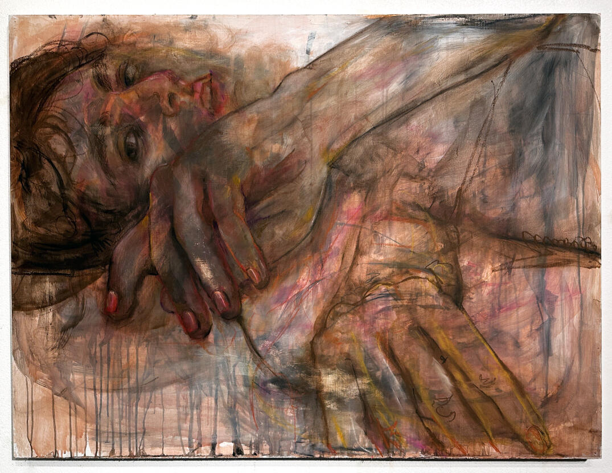
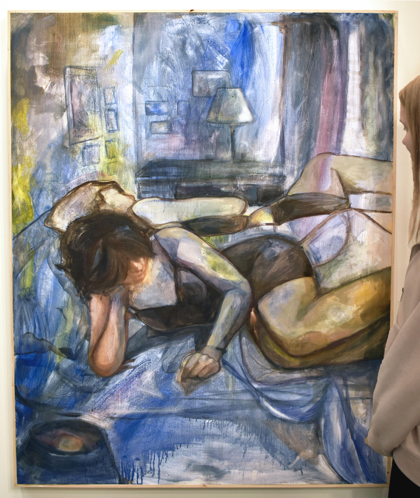
 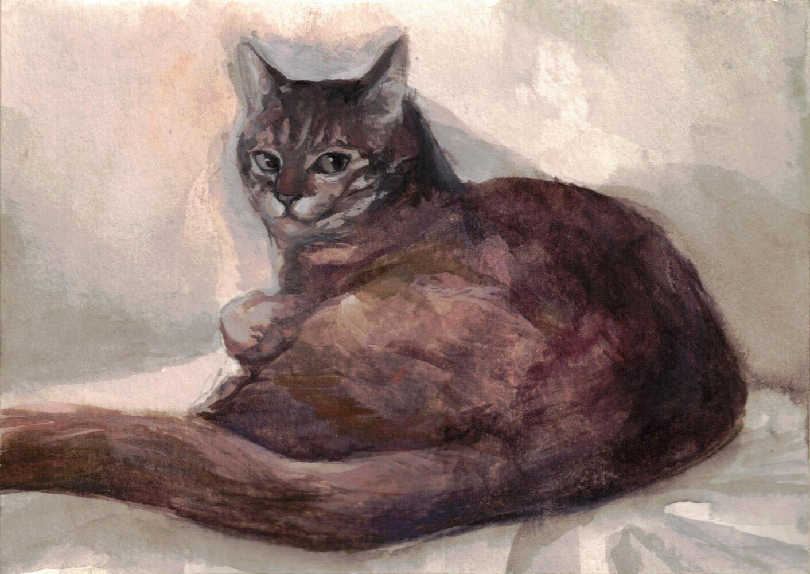
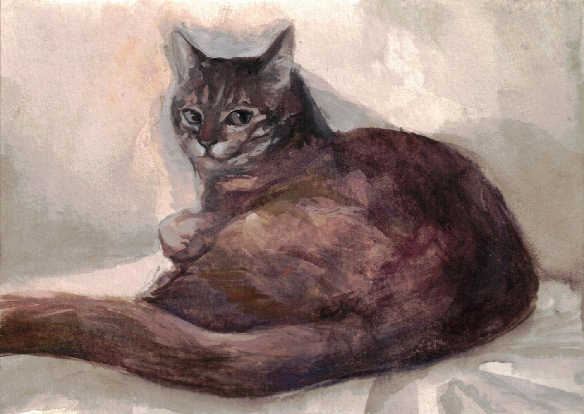
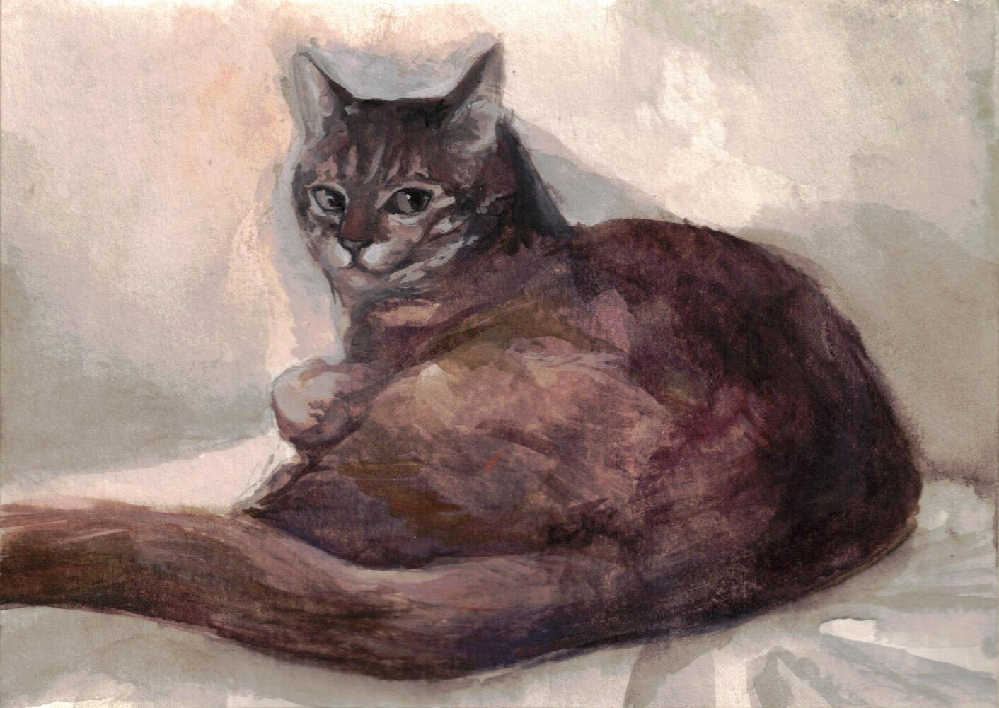
Abstract